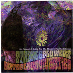

Home Artist links Label link

Strange Flowers - Ortoflorovivaistica
| Artist: | Strange Flowers |
| Title: | Ortoflorovivaistica |
| Label: | Nasoni-Beyond your mind BYMR 40010 CD |
| Length(s): | 44 minutes |
| Year(s) of release: | 2006 |
| Month of review: | [07/2008] |
Line up
Michele Marino - vocals, guitars, keys, tricks
Giovanni Bruno - guitars, slides, keys, screaming cats
Stefano Montefiori - bass, vocals, keys, blue angels
Maurizio Falciani - drums, percussions, sunny rain
Tracks
| 1) | Mars Behind Your Eyes | 5.02
|
| 2) | John On The Moon | 2.28
|
| 3) | The Ghost In Your Room | 8.34
|
| 4) | A Telescope In Reverse | 3.12
|
| 5) | The Spide Rin The Clock | 3.10
|
| 6) | My Garden | 4.25
|
| 7) | Strange Girl | 16.50
|
Summary
The music
If it weren't for the technical quality of the recordings, this might just have been an album made in the late sixties. There's a bit of the psychedelica of early Floyd, See Emily Play periode stuff, but just as much of for instance The Kinks. Most songs are a tad longer than songs were in those days, but the feel is there alright. On the other hand, the extra length is used to insert guitar solos, some quite long, that are somewhere in between early seventies progressive and psychedelic. The vintage sound, however, is always there. This combination can also be heard in some of The Bevis Frond's stuff
The combination of lazy sixties type vocal sections and building and climaxing guitar solos is what make the songs on this album work. Whereas the vocal sections don't exactly make a lasting impression -especially when you're not really into lazy vocals- the guitar solos need a contrasting background. Still, the lazy vocals take up a little too much of the album, since the short tracks are pretty much all lazy vocals. For the longer tracks (1, 3, 6, 7) the lazy vocals might use the offered alibi, for these short tracks it will not suffice.
Conclusion
The guitar solos offered on this album are good, some great even. But this is still something of a vocal album, and the vocals are not great. So, we do get some great stuff in patches, but some not so great too. The result is pretty decent, but could have been much better.
© Roberto Lambooy